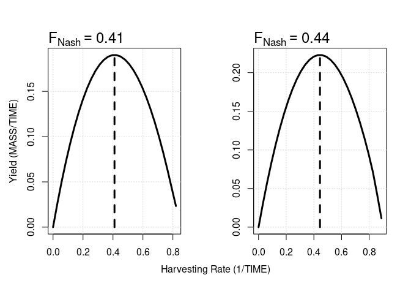

Quick Start
The goal of nash is to compute Nash (1951) Equilibrium (NE) harvesting rates for naturally occurring species that biologically interact through e.g. predation and/or competition. NE harvesting rates mean to exploit each species in a wild mixture at such rates that no deviation from this rate can increase the long-term yield from that species (Farcas and Rossberg 2016).
The algorithms implemented in nash assume that users have developed an ecosystem model with S harvested compartments, typically represented by population biomass variables. In the simplest case, population dynamics are given by a system of autonomous ordinary differential equations of the general form:
$$\frac{d\mathbf{B}}{dt}=\mathbf{f}(\mathbf{B})\circ\mathbf{B}-\mathbf{F}\circ\mathbf{B},$$
with B representing the non-negative biomass or state vector (dimensions MASS), f(B) specifying the population growth (or decay) rate in the absence of exploitation (dimensions 1/TIME) and the last term describing removal (e.g. harvesting and/or culling) at a rate F (dimensions 1/TIME). In addition, ∘ denotes the entry-wise or Hadamard product.
To run nash, the user is required to define an R function that runs the above model for given F values and returns yields at the stable equilibrium Y = F ∘ B* = F ∘ B*(F). The nash function will then approximate the model near equilibrium via a multispecies Lotka-Volterra (LV) model, for which the NE can be computed analytically and so a first estimation of optimal F obtained. Subsequently, an updated LV approximation is calculated near the equilibrium given by this new F. nash will then re-compute the NE starting a new iteration until a (user-adjustable) convergence threshold for F is reached.
Installation
You can install the development version of nash either through the devtools (Wickham et al. 2022) or remotes (Csárdi et al. 2023) packages:
# install.packages("devtools")
remotes::install_github("ThomasDelSantoONeill/nash")Minimal Example
The following chunk of code implements a modified two-species competitive LV model as HQLV and showcases the execution of nash. For this example, the HQLV function also includes a numerical integration solver via the deSolve package of Soetaert, Petzoldt, and Setzer (2010) that returns long-term yields for given harvesting rates.
# Load libraries .
library (deSolve) # ODE solver library
library (nash)
# Initial conditions and parameters .
y <- c(b1 = 0.02, b2 = 0.001)
parameters <- c(r1 = 1, r2 = 1,
a11 = 1, a12 = 0.5,
a21 = 0.25, a22 = 1)
time <- 1:100
# Numerical fudge to avoid biomasses becoming negative .
inv <- 1e-5
# Model formulation .
HQLV <- function(par, avg.window = 10) {
derivs <- function(time, y, parameters) {
with (as.list(c(y, parameters)), {
db1.dt = b1*(r1-a11*b1-a12*b2^2) - par[1]*b1 + inv
db2.dt = b2*(r2-a22*b2-a21*b1^2) - par[2]*b2 + inv
return(list(c(db1.dt, db2.dt)))
})
}
# Default integrator in deSolve
simulation <- ode(y = y, times = time, func = derivs,
parms = c(parameters, par))
# Yield computation
yields <- array(dim = c(nrow(simulation), length(par)))
for(i in 1:nrow(simulation)) {
yields[i,] <- simulation[i, -1] * par
}
return(colMeans(tail(yields, n = avg.window)))
}
# Execution of nash
NE <- nash(par = c(0.2, 0.3), fn = HQLV, progress = FALSE)
# Results
print(NE)
#> $par
#> [,1] [,2]
#> [4,] 0.4101201 0.444264
#>
#> $Bnash
#> [,1] [,2]
#> [4,] 0.4639249 0.5019498
#>
#> $value
#> [1] 0.1902649 0.2229980
#>
#> $counts
#> [1] 20
#>
#> $convergence
#> [1] "Nash equilibrium found after 4 iterations."By setting the yield.curves argument within the nash call equal to TRUE, it is possible to graphically verify that “no fleet can attain higher yields by changing their corresponding harvesting rates”.

Assistance
If you encounter a bug, please file an issue with a minimal reproducible example on GitHub. For questions and other discussions/enhancements please email me at t.j.delsantooneill@qmul.ac.uk.